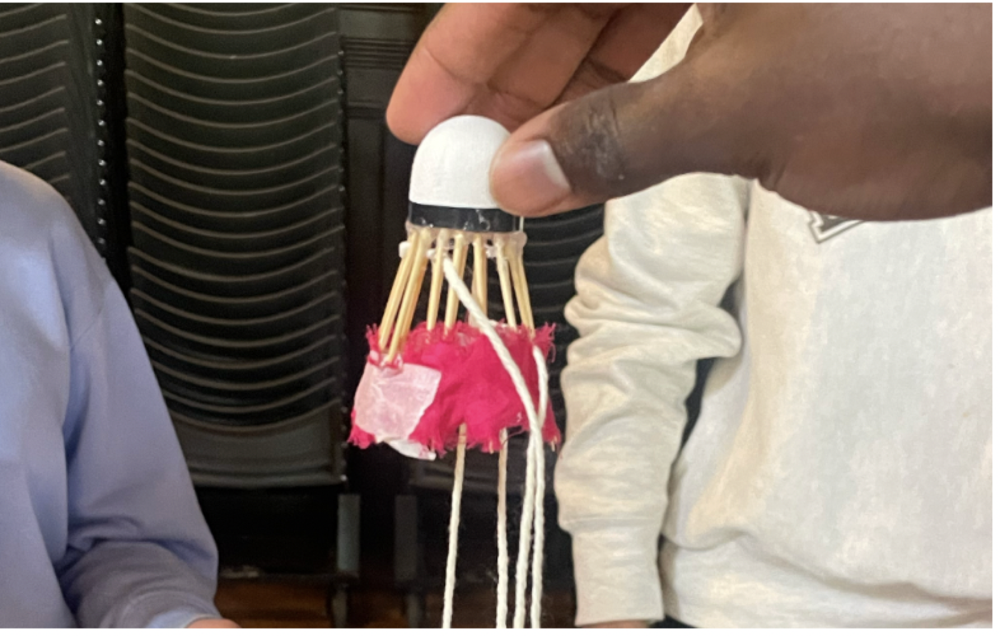
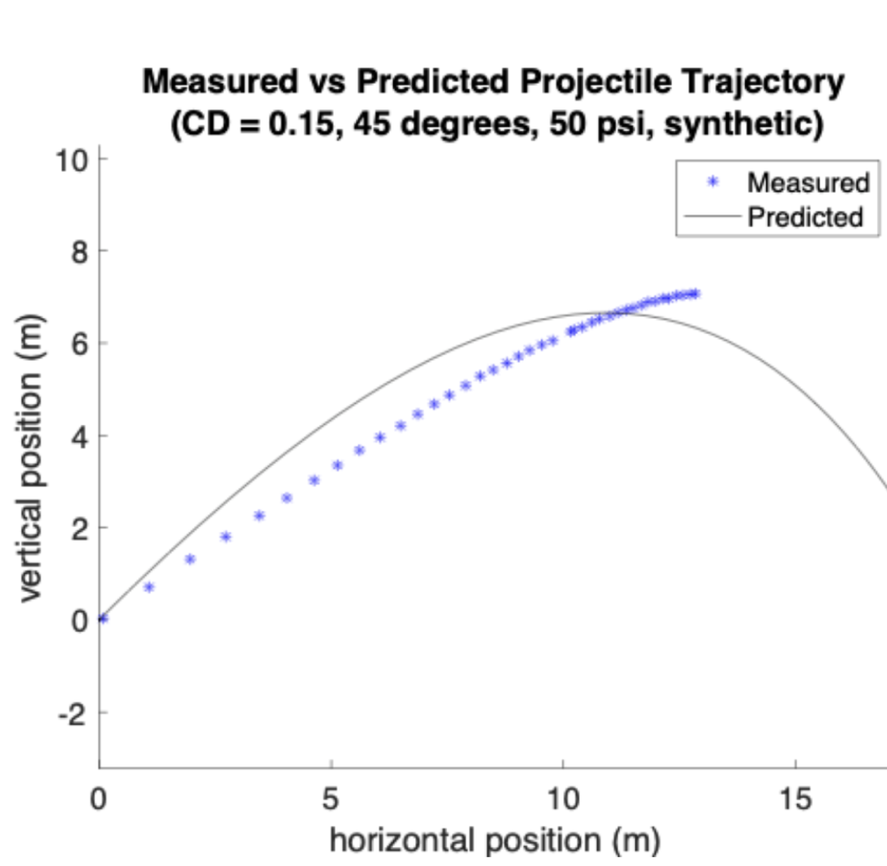
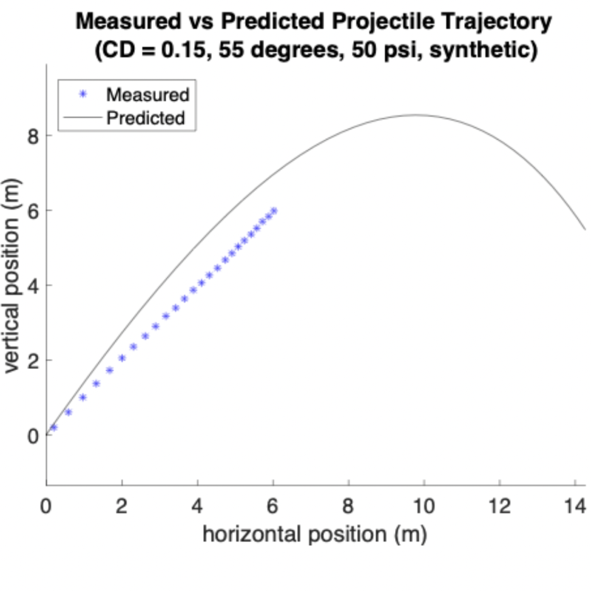
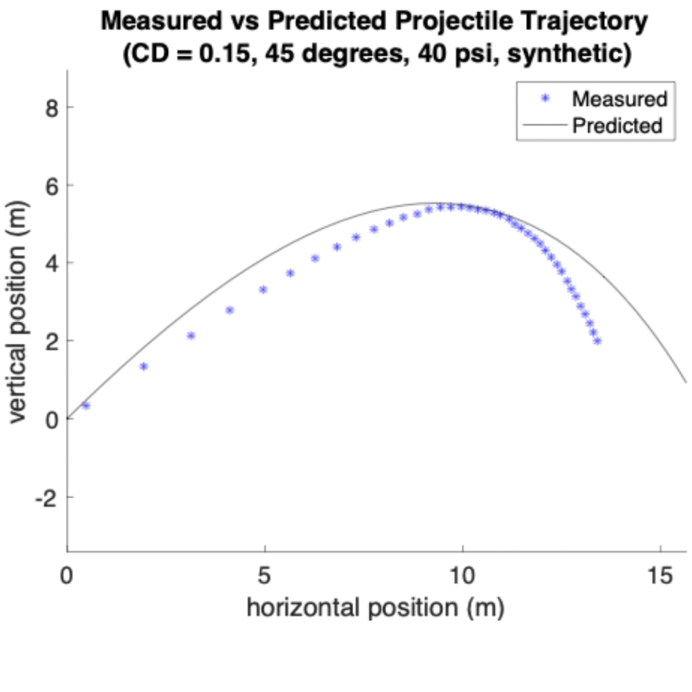
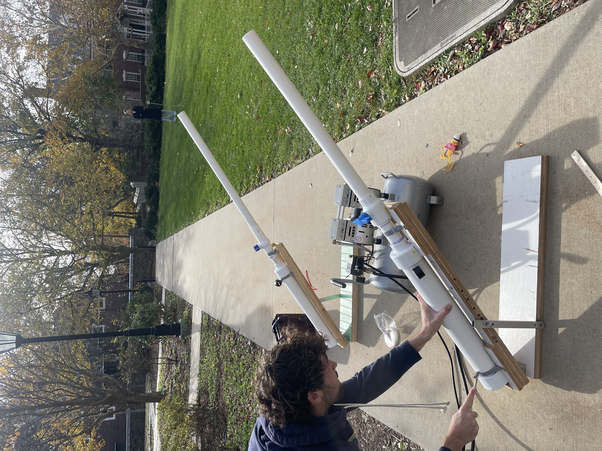

Lab — Shuttlecock Design
Worked on a team to redesign the feathers of a shuttlecock in order to track its flight path when launched from an air cannon and compare it to that of a standard shuttlecock.

This lab investigated the fluid mechanics governing the flight of a badminton shuttlecock. Due to its unique shape and high drag coefficient, a shuttlecock experiences significantly more drag than standard objects in ballistic trajectories, resulting in rapid deceleration and a steep, non-parabolic flight path. The aim of this experiment was to better understand and model this behavior by predicting the shuttlecock's trajectory and comparing those predictions with measured trajectories. Additionally, by creating a synthetic shuttlecock that mimics the trajectory of a traditional feathered shuttlecock, the drag coefficient of the synthetic design could be determined through experiment–model fitting.



